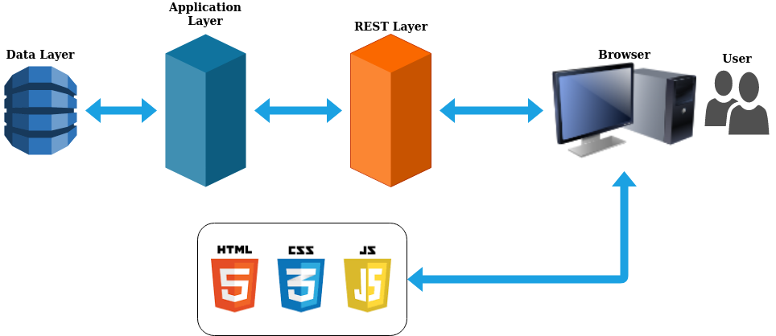
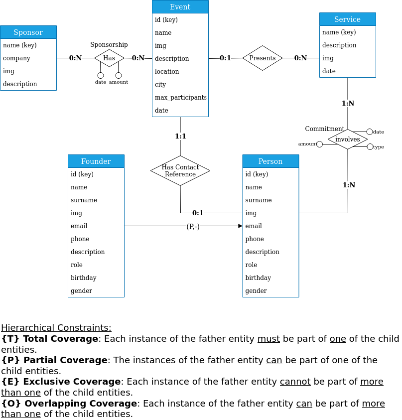
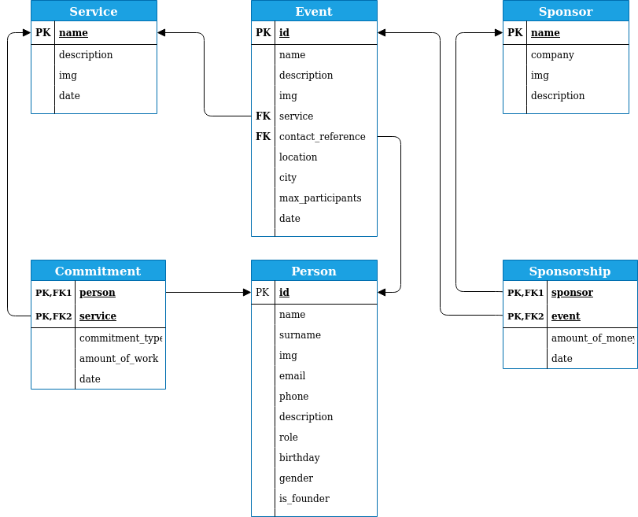

Deliverable D1
| Member n. | Role | First name | Last Name | Matricola | Email address |
|---|---|---|---|---|---|
| 1 | administrator | Eduard Ionut | Chirica | 878605 | eduardionut.chirica@mail.polimi.it |
| 2 | member | Davide | Caldana | 953730 | davide.caldana@mail.polimi.it |
| 3 | member | Yan | Dong | 925891 | yan.dong@mail.polimi.it |
Describe here, with a diagram, the components of your web application and how they interact. Highlight which parts belong to the application layer, data layer or presentation layer. How did you ensure that HTML is not rendered server side?

To make sure that no rendering is done on the server side we ensured that we provide only static html pages that contain javascript snippets of code. And is it the javascript on these pages that create the "dynamic content" on the final page by calling all the needed elements and the APIs in the server.
Describe here to what extent did you follow REST principles and what are the reasons for which you might have decided to diverge. Note, you must not describe the whole API here, just the design decisions.
We start by explaining the principles behind REST and how have we follow them:
Finally, we can say that we are following all the principles without any divergences. The only thing worth saying is that we haven't implemented all the operations possible on the entities available on the database. Instead we've only implemented the ones we needed in our website.
Describe here synthetically, which models you have introduced for resources.
There is a model for each entity(table) that we can find in the Database, apart from the tables that were just introduced to create N to N relations such as Commitment and Sponsorship. Also some Models contain other models so that the users of these APIs can get all the information it needs just with one call. For instance if you retrieve an Event, it will also contain a Person (the contact reference) and a Service.
Describe with an ER diagram the model used in the data layer of your web application. How these map to the OpenAPI data model?
Each entity present in the ER schema is mapped with a data model schema in the OpenAPI a part from the Commitment and Sponsorship. Note that we have multiple schemas in the OpenAPI definition that corresponds to the same entity in the ER schema. This was done so that we can minimize the amount of data passed on each request, and so that it's possible to retrieve just the needed information.
Here is the ER Diagram of the model:

And here is the ER Logic mapping tables in the data model:

Describe here which tools, languages and frameworks did you use for the backend of the application.
The JavaScript runtime environment used for the backend server is NodeJS. We also used the Swagger middleware version 2.0 (OpenAPI). While for the client we used JavaScript and the JQuery JS Library;
As for the tools used, we can find:
Describe here:
We think that we used correctly the OpenAPI specification by mapping each function of the Controller part to an endpoint. We also specified into the OpenAPI documentation every constraints such as the request parameters, type of parameter etc., so that these checks can be done in the Middleware. We mapped all the possible errors manually on the controller, making sure that they respect the specifications written for Swagger.
To test the APIs we've first tested them via the SwaggerUI interface, and also via browser and curl requests. We made sure that the status codes were consistent with the documentation.
This can be explained by taking as a reference the diagram at the beginning of the document, where we can notice that the application layer is only exposed to the REST API and the Data Layer. For all the static content, relative to the front-end part, we used the serve-static middleware in order to map files in /www folder as the root of the website. While we use JavaScript to generate the Dynamic content inside the html pages, by requesting this data via the REST APIs.
We used npm to maintain updated the various libraries used in both back-end and front-end.
We haven't implemented any type of authentications so it was not needed.
To manage the data model we used a relational database because it is the standard solution for such a data model.
Describe here how development tasks have been subdivided among members of the group.
Backend (includes both node.js implementation and OpenAPI specification):
Frontend:
Design:
Describe here the research of (full or part of) existing APIs that are similar in objectives and scope to the one implemented, that have possibly guided implementation choices (these should not be necessarily OpenAPI implementations). Toy APIs (such as the Swagger's Pet Store) or the example shown during lectures are not a valid response.
The inspiration for defining the APIs of this project comes mostly from previous projects we have done. We have used and/or developed a lot of servers with a great amount of APIs. And this has helped us a lot for defining the endpoints and resources we needed to use. For instance the endpoints for this website were kind of similar in complexity to the endpoints designed for an App that one of our team member has developed and published: FilteRSS
What was the most important thing all the members have learned while developing this part of the project, what questions remained unanswered, how you will use what you've learned in your everyday life?
Although we had experience with using and designing APIs, we usually didn't designed them by using the Swagger Middleware, but it turns out to be very useful so we will definitely be using it again.
We also acquired some usability and accessibility knowledge, that will be useful in any project that has a user interface. And lastly by working together with a designer, we have learned a couple of concepts that we can use anytime we work with graphics.